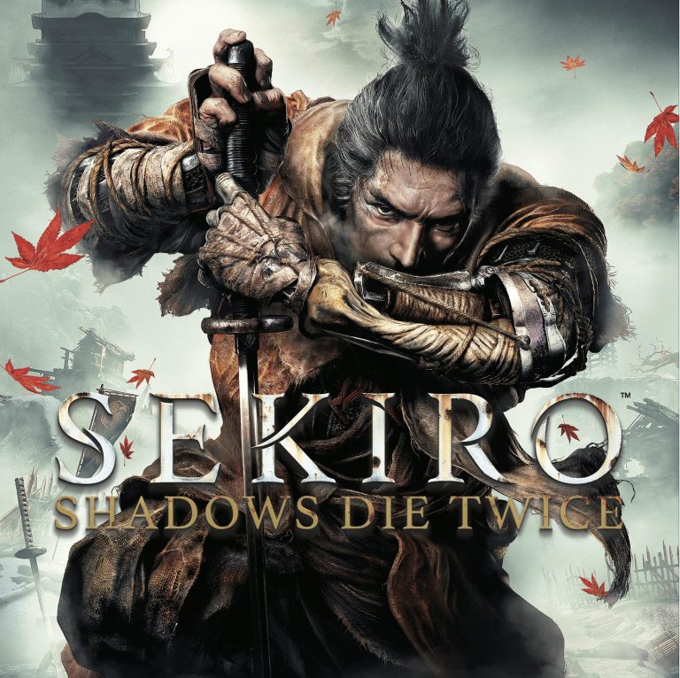

Sekiro: Shadows Die Twice
Select A Game Down Below!
Summary
In Sekiro: Shadows Die Twice you are the “one-armed wolf”, a disgraced and disfigured warrior rescued from
the brink of death. Bound to protect a young lord who is the descendant of an ancient bloodline, you become
the target of many vicious enemies, including the dangerous Ashina clan. When the young lord is captured,
nothing will stop you on a perilous quest to regain your honor, not even death itself.
The setting is late 1500s Sengoku Japan, a brutal period of constant life and death conflict, where you’ll
come face to face with larger than life foes in a dark and twisted world. Unleash an arsenal of deadly
prosthetic tools and powerful ninja abilities while you blend stealth, vertical traversal, and visceral head
to head combat in a bloody confrontation.
An unnamed shinobi, tasked with protecting a young lord of mystical lineage, is left for dead when a powerful
samurai attacks and chops off his arm.
All Sekiro Bosses In Order (SPOILERS!!!)
- Gyoubu Masataka Oniwa
- Lady Butterfly
- Genichiro Ashina
- Folding Screen Monkeys
- Corrupted Monk
- Guardian Ape
- Emma The Gentle Blade (Shura Ending)
- Isshin Ashina (Shura Ending)
- Great Shinobi Owl (Immortal Severence Ending)
- True Corrupted Monk (Immortal Severence Ending)
- Divine Dragon (Immortal Severence Ending)
- Owl (Father) (Purification Ending)
- Isshin, The Sword Saint (Immortal Severence Ending)
- Inner Father (Shura Gauntlet)
- Inner Genichiro (Divine Heir Gauntlet)
- Inner Isshin (Severence Gauntlet)